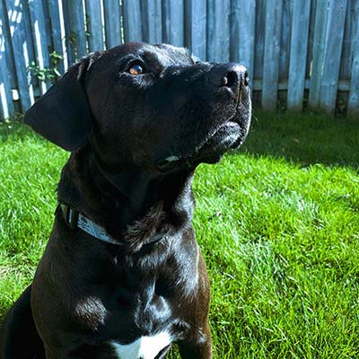

About
My dogs are my life. Nothing cures a bad day like having a sweet dog to cuddle with! This blog will show everyone how amazing these dogs are, despite being adopted from shelters. People are very quick to judge dogs that come from shelters, but in reality, they're just as amazing as any other dog. Acee, Charlee, and Ash were all rescue dogs that are now living a great, and spoiled life.


Did you know...
There are more homeless dogs than people.In 2019 alone, 30,000 dogs weresurrendered to shelters, this number does not include dogs that were dumped elsewhere.which is estimated to be another 50,000 by Humane Canada. This is in just Canada alone, imagine the rest of the world.
Did you know...
Adoption helps with animal overpopulation! Adopting makes breeding rates go down!

Did you know...
Adoption from shelters is cheaper! Shelter dogs are already fixed, have their vaccines and have lower adoption fees!
